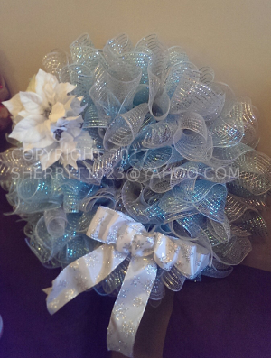
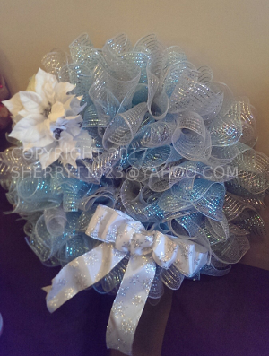
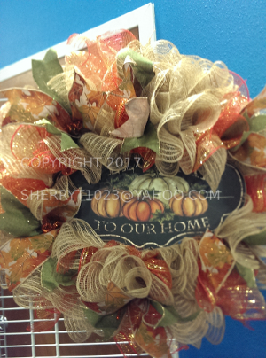
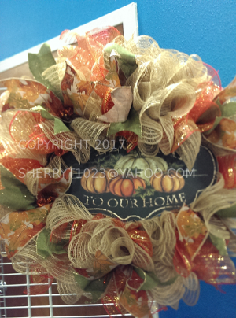

- Military
- Anniversary
- Wedding
- Cheering someone up
- Congratulations
- House-warming Gift
- Birthday
- Every Holiday
- Many More!
Perfect for every occasion!
These are some of the many that I've made, so far.
 

 

Since they are all hand-crafted, there are never two exactly alike. They are as unique as you and I.